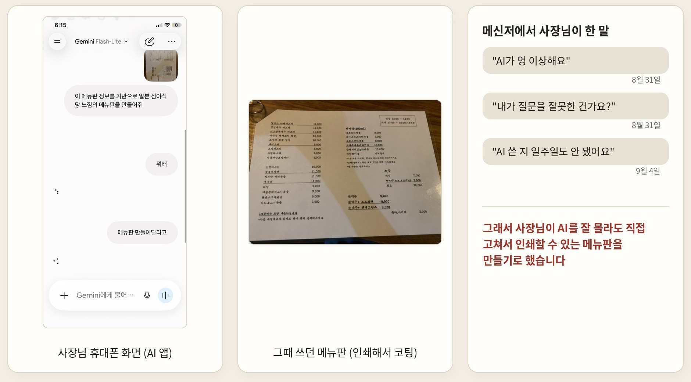
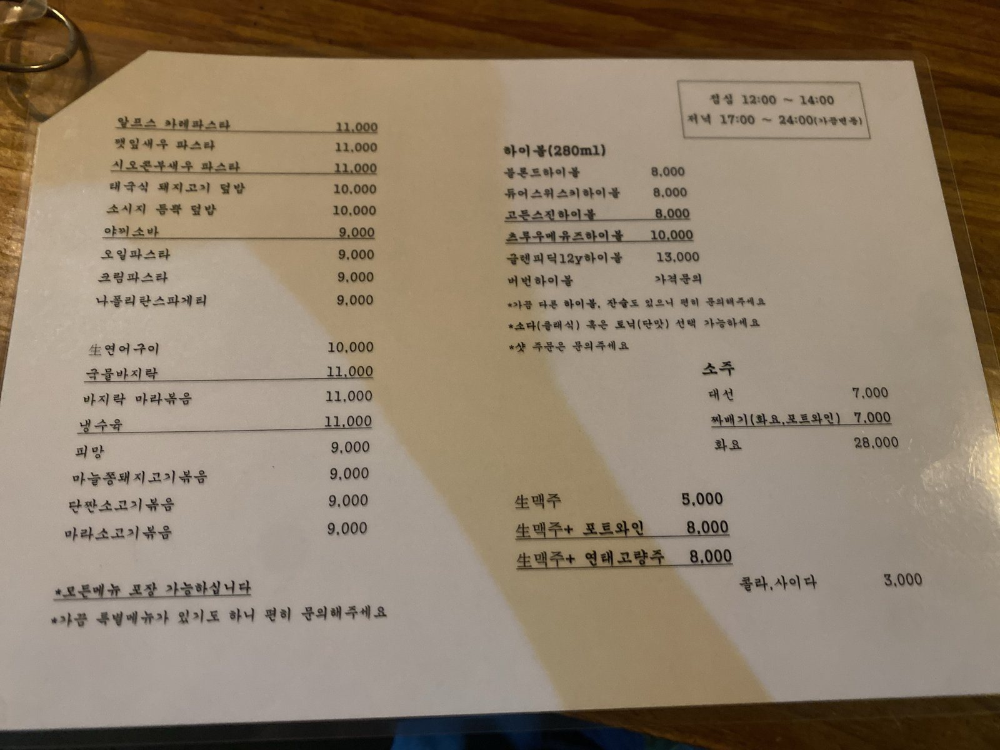
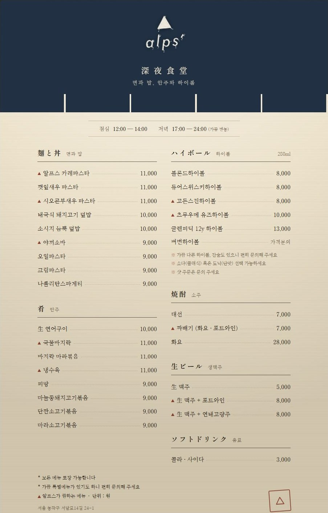
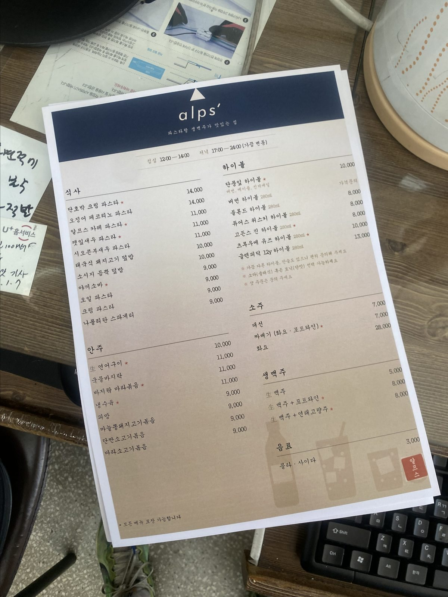
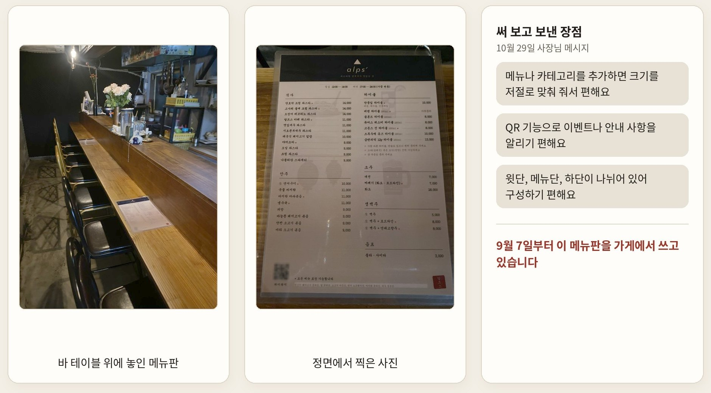
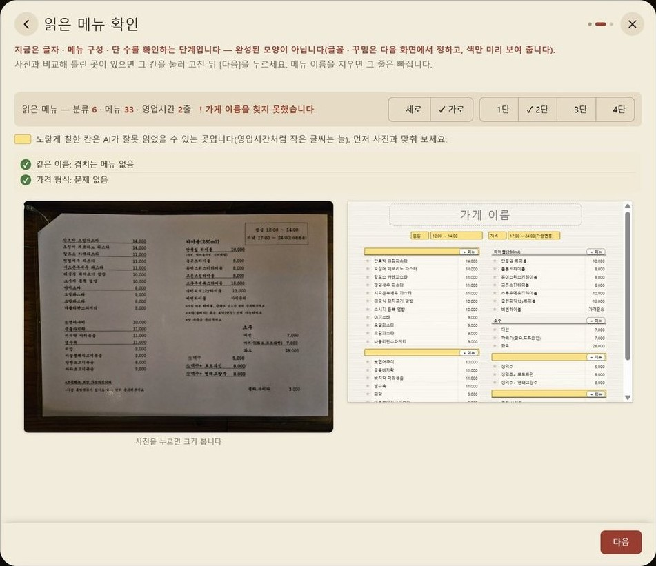
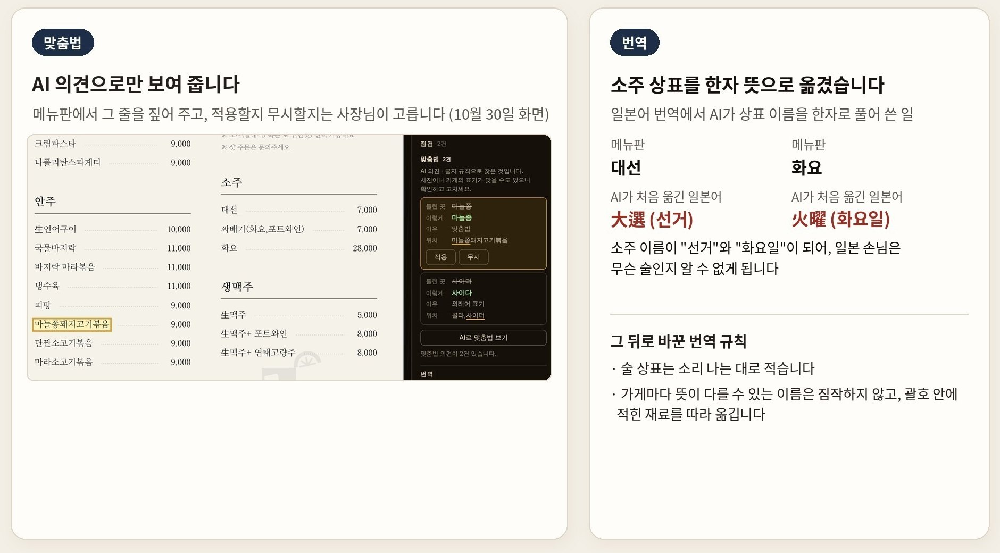
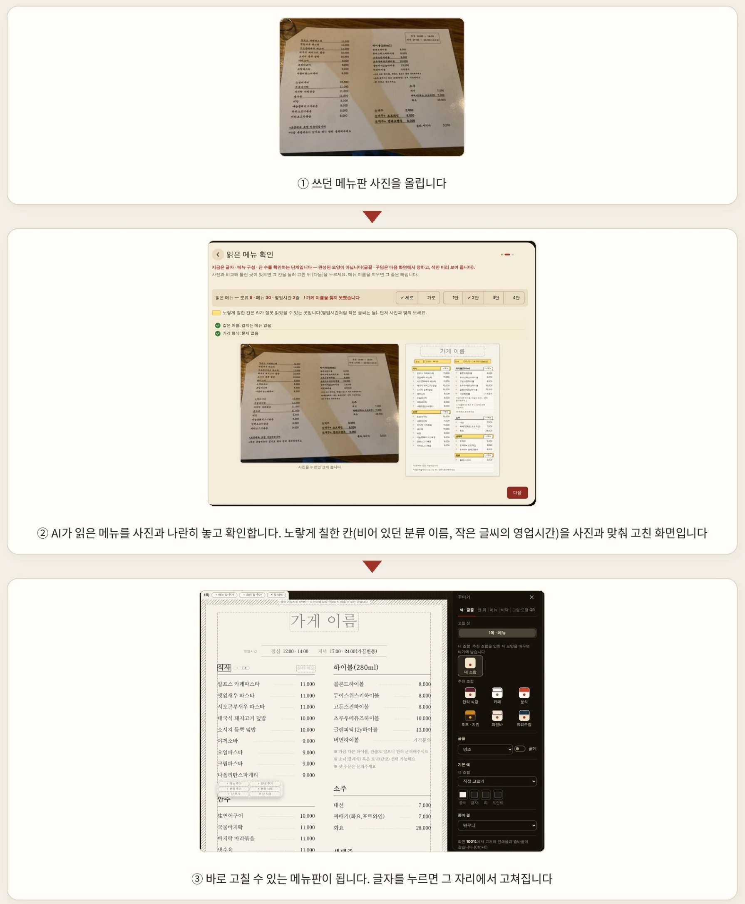

AI 메뉴판 편집기
가게에서 쓰던 메뉴판 사진을 올리면 AI가 메뉴를 읽어 와 새 메뉴판을 만들어 주는 웹 도구입니다. 만든 메뉴판은 사장님이 직접 고쳐서 인쇄할 수 있습니다. 지인이 하는 요리주점의 메뉴판을 만들어 주면서 시작했고, 지금은 다른 가게도 쓸 수 있게 넓혔습니다.
아래 글은 2026년 10월 31일 전국민 AI 활용 사례 공모전 시즌3에 낸 글의 순서를 따랐고, 숫자는 11월 9일 기준으로 다시 적었습니다.

- 구분
- 개인 작업
- 역할
- 기획과 확인. 코드는 Claude Code가 작성
- 기간
- 2026.08~11
- 도구
- Claude Code · Gemini
- 결과
- 9월 7일부터 지인 요리주점에서 인쇄해 사용 · 빈 메뉴판으로 시작하기와 업종별 추천 조합 6가지 · 전국민 AI 활용 사례 공모전 시즌3 제출
AI에 익숙하지 않은 사장님을 위해 만들었습니다
8월 31일 저녁, 사장님이 쓰던 메뉴판을 사진으로 찍어 AI 앱에 새 메뉴판을 부탁했습니다. 두 번을 더 보내도 답이 오지 않자, 사장님은 메신저에 「내가 질문을 잘못한 건가요?」라고 적었습니다. AI를 쓴 지 일주일도 안 됐을 때였습니다.
그래서 그 사진을 받아, AI를 잘 몰라도 사장님이 직접 고쳐서 인쇄할 수 있는 메뉴판을 AI와 함께 만들기로 했습니다. 개발을 전공하지 않았기 때문에 코드는 AI가 쓰고, 저는 사장님 말을 모아 AI에게 전하고 나온 결과를 확인하는 일을 맡았습니다.

사장님 의견으로 두 달 동안 고쳤습니다
첫 메뉴판을 보낸 뒤에도 사장님은 써 보다가 불편한 점이나 바라는 점이 생기면 메신저로 바로 알려 주었습니다. 저는 그 말을 AI에게 전해 고친 메뉴판을 다시 보냈고, 그렇게 두 달 동안 메뉴판이 바뀌었습니다. 표의 따옴표 안은 사장님 말을 읽기 쉽게 조금 다듬은 것입니다.



| 날짜 | 사장님이 한 말 | 바꾼 것 |
|---|---|---|
| 8월 31일 | 「추천 메뉴 세모 표시는 좀 별로」, 「글씨체는 궁서체로」, 「분류 이름은 한자 말고 한글로」, 「그림도 넣어 주세요, 야생마처럼 잘 달리는 느낌으로」 | 세모를 별표로 바꾸고 궁서체·한글 분류·말 그림을 넣어 그날 밤 보냈습니다 |
| 9월 3일 | 「메뉴를 추가하니까 글씨가 작아져요」, 「분류 안의 메뉴 순서도 바꾸고 싶어요」 | 메뉴를 넣을수록 글씨가 줄어드는 오류를 고치고, 분류 안에서 메뉴 순서를 바꾸는 기능을 넣어 그날 보냈습니다 |
| 9월 6일 | 「메뉴 설명은 못 넣나요?」 | 메뉴 이름 아래에 설명 줄을 넣어 그날 보냈습니다 |
| 9월 7일 | 「8년 쓴 메뉴판 중에 최고」, 「좌우가 잘렸는데, 제가 뭘 잘못한 건가요?」 | 편집 화면과 실제 인쇄 여백이 달랐던 것을 고쳐 9월 17일에 다시 인쇄했습니다 |
| 9월 9일 | 「레드, 화이트, 스파클링, 로제 칸이 순서대로 나뉘면 좋겠어요」, 「배경 그림으로 포도나무 부탁해요」 | 와인 메뉴판을 한 장 따로 만들었습니다 |
| 10월 20일 | 「외국인 손님 100명 오면 95명은 중국 분이에요」, 가민 시계에 기록한 러닝 경로도 넣을 수 있느냐고 물었습니다 | 만들어 둔 번역 기능을 알려 드리고, 손님이 QR 코드를 찍으면 경로 링크가 열리게 해 10월 22일에 넣었습니다 |
| 10월 29일 | 「테두리가 계속 생겨요」, 「그림 위치를 마우스로 끌어 옮기면 좋겠어요」 | 인쇄하면 종이 가장자리에 남던 흰 테두리를 없애고, 그림을 마우스로 끌어 원하는 자리에 놓을 수 있게 고쳤습니다 |
지금 가게에서 이렇게 씁니다
9월 7일 사장님이 메뉴판을 직접 인쇄해 코팅했고, 그날부터 가게에서 쓰고 있습니다. 처음부터 사장님이 직접 고칠 수 있게 만들었기 때문에, 새 메뉴가 나오면 사장님이 메뉴판을 고칩니다. 원산지 칸을 만들어 드렸더니, 원래 메뉴판에는 없던 원산지도 새로 적어 넣었습니다.
10월 28일에는 집 컴퓨터에서 그림을 바꾸고, 손님이 찍으면 가게 와이파이에 바로 접속되는 QR 코드도 넣었습니다. 다음 날 새로 인쇄해 바 테이블에 올려 두었습니다.

AI가 틀려도 바로잡을 수 있게 만들었습니다
AI는 메뉴판 사진을 잘못 읽을 때가 있습니다. 조명이 비치거나 글씨가 작으면 메뉴 이름을 틀리게 읽기도 하고, 한 분류를 통째로 빠뜨리기도 했습니다. 그래서 AI가 읽은 메뉴를 사진 옆에 나란히 보여 주고, 잘못 읽었을 수 있는 칸은 노랗게 칠했습니다. 사장님이 이 화면에서 확인을 마쳐야 메뉴판이 만들어집니다.

맞춤법도 같은 까닭으로 AI가 직접 고치지 않습니다. 「마늘쫑」을 「마늘종」으로 고치라는 식의 의견을 「AI 의견」으로 보여 주고 메뉴판에서 그 줄을 짚어 줄 뿐, 적용할지 무시할지는 사장님이 고릅니다.
번역에서도 AI가 틀린 적이 있습니다. 일본어로 옮기면서 소주 상표 「대선」을 선거를 뜻하는 「大選」으로, 「화요」를 요일을 뜻하는 「火曜」로 바꿔 버렸습니다. 상표 이름을 한자 뜻으로 풀어 버린 것이라, 그 뒤로 술 상표는 소리 나는 대로 적고, 가게마다 뜻이 다를 수 있는 이름은 괄호 안에 적힌 재료를 따라 옮기도록 번역 규칙을 바꿨습니다.

AI와 일한 방식: 기록하고, 다시 확인했습니다
AI와 대화가 길어지면 앞에서 정한 내용을 AI가 잊었습니다. 그래서 사장님이 한 말, 그렇게 정한 이유, 고친 내용을 번호를 붙여 「결정 기록」 문서에 남기고, 새 대화를 시작할 때마다 AI가 먼저 읽게 했습니다. 11월 9일까지 442건이 쌓였습니다.
AI가 「고쳤습니다」라고 답했는데 실제로는 그대로인 적도 있었습니다. 그래서 인쇄 여백이 몇 mm인지, QR 코드를 다시 읽었을 때 넣은 주소가 그대로 나오는지 같은 것을 자동으로 확인하는 프로그램을 AI에게 만들게 했습니다. 문제를 찾아 고칠 때마다 확인 항목을 하나씩 더해, 11월 9일 기준으로 75가지가 됐습니다.
쓰던 메뉴판이 있으면 사진 한 장으로 이어서 시작합니다
메뉴판은 인터넷 주소 하나로 열리고, 프로그램을 설치하거나 가입할 필요가 없습니다. 그래서 다른 가게도 같은 방식으로 시작할 수 있습니다. 쓰던 메뉴판이 있으면 사진을 올려 바로 고칠 수 있는 메뉴판으로 시작하고, 없으면 빈 메뉴판에서 가게 이름과 모양을 정해 시작합니다.
사장님이 처음 AI 앱에 맡겼다가 답을 받지 못한 그 사진으로 10월 30일에 다시 해 보니, 분류 6개와 메뉴 30개를 읽어 2단 메뉴판으로 만들었습니다.
